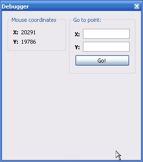
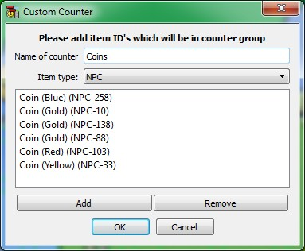

Debugger, is a tiny informative toolbox which displaying some debug information, for example, mouse coordinated. Also with debugger tool you can jump into specifile X:Y position (reliative to view's center).
Also in the debugger you will see counters of placed items on the level or on the world map.
To show debugger box, open the menuitem [View -> Debugger]

This is a special feature which allow count all items of target bunch of ID's.
You can add and remove any counters in this list by your wish. To edit or remove counter use the context menu.
Note: for performance reasons you should refresh couners manually with "refresh" button!
Custom counter editor dialog

Copyright © 2014-2015 Platformer Game Engine by Wohlstand project. All rights reserved.